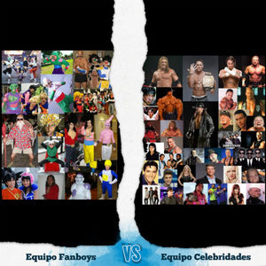

Fanboy
 De: La Frikipedia, la enciclopedia extremadamente seria.
De: La Frikipedia, la enciclopedia extremadamente seria.
| De la serie animales y otros bichejos:
|
|
|
| Nombre común:
|
Fanboy hijo de puta
|
| Nombre científico:
|
Estupidus non videntus
|
| Especie:
|
Animales de mierda
|
| Subespecie:
|
Mongolos subnormales
|
| Alimentación:
|
Juegos exclusivos y demas pendejadas
|
| Apariencia:
|
Persona muy parecida a un zombie, suelen llevar mandos de su consola en mano
|
| Hábitat natural:
|
3D juegos, gamespot, pc gamer, la pagina oficial de nintendo etc
|
| Localización:
|
Cloacas, cuevas putrefactas, el año de Shigeru Miyamoto, pantanos mal olientes
|
| Número aproximado de ejemplares:
|

|
| Fecha de extinción:
|
Hasta que las putas consolas dejen de existir
|
| Pokemonización:
|
Cualquier cosa menos humano
|
«Ya veran el poder de la bestia negra!!»
~ Sonyer en referencia al poderio de su negro bien dotado (Consolador)
«Este zelda es el más original!!»
~ Nintendero Negandose a ver la horrible realidad
«Ya veran el poder de la bestia negra!!»
~ Sonyer Nuevamente en referencia a su negro bien dotado
«Como me sangra el ano»
~ Sonyer Nuevamente en referencia a su Consolador
«No me arrepiento de haberme comprado un xbox 360»
~ Nintendero Burlandose de un xboxero
«Me tienen envidia porque soy rico, guapo y un gran jugador»
~ Cristiano Gaynaldo jugando al gears of war, juego de machomenos
«Mamaaaaaaaaaaaaaaaaaaa y mi desodorante roll on?»
~ Sonyer buscando el mando del play station move
«Uuuuuuuu o uuuuuoooouuuuu oouuuuu»
~ Xboxero Creyendo que canta el coro de halo a la perfeccion
«Nintendo siempre fue puro marketing pero nunca le ganó a Sega ni en calidad ni en creatividad»
~ Segafan Incapaz de asumir la muerte de SEGA
Dícese de aquella persona hombre o mujer (generalmente hombre) de una edad comprendida entre 13 y 35 años que ha recibido cantidades indecifrables de estupides, formando asi un ser incomprendido y rechazado por la sociedad, un fanboy es una forma de vida similar a la zombie, carente de razonamiento y sentido logico que en ataques coordinados pueden llegar a ser un enorme problema. Un fanboy no llega al estadofriki si no que cohabita junto con los trolls de internet en una especie de limbo que sirve placenta para que su estupides se desarrolle a la de un adulto.Debido a su alto nivel de autosuficiencia y gran estupides un fanboy puede llegar a defender juegos que jugo durante su etapa de larva(Muy similar a la etapa de niñes humana), o bien en su etapa adulta. Un fanboy por lo general tiene algo que defender, esto para el caso varia segun el genero y tipo de fanboy. Los fanboys se hacen, no nacen, y este "objeto a proteger" introduce su pene en la mente de la joven persona, inyectando grandes cantidades de semen que fermentan el cerebro de la victima, matando asi toda capacidad de razonamiento logico o de discusion sana, la persona entonces entra en un la etapa larva que mas tarde dara a luz a un repugnante fanboy.

Caso típico de un fanboy, notece la vista perdida y distante hacia arriba, intentando buscar mas mentiras en su prutefacto cerebro
El fanboy por excelencia suele creer jugar a juegos con alto nivel de dificultad en su manejo y complejidad historica, los hay desde los mas cuerdos hasta los mas idiotas, sin mencionar que en muchos casos creen ser grandes profesionales del juego en cuestión. Sin embargo aquellos juegos que sean de indole similar a "su juego" pero no superen las cotas de calidad autoimpuestas por el fanboy, seran atacados de manera feroz
Tipos de fanboy
Los casos mas comunes de fanboys se dan en muchisimos aspectos de la vida, desde peliculas hasta libros, desde comics hasta juegos de video, como la categoria es basta y grande, dejaremos entonces la categoria principal sobre el fanboy:
- Fanboys Consoleros: Este tipo de fanboy es el mas comun, y por ende el mas peligroso. La unica cura actual para este tipo de fanboy se basa en suministrar grandes cantidades de plomo a la cabeza. Es el tipo de fanboy mas agresivo y puede llegar a digi evolucionar a un fanboy inclusive mas peligroso, hay 3 tipos de fanboy consolero:
Fanboys covertidos en juguetes por la magia de la Bruja del Mar
Nintendero

La droga de los Noentienderos
El primer tipo de fanboy reportado en toda la historia de la humanidad, se cree que juegos como Mario, Zelda y Metroid son los principales causantes de esta pestilente plaga, esto sumado a la nostalgia puede llegar a crear un ser casi indestructible, con capacidades de razonamiento nula, suelen actuar bruscamente si alguien se digna a hablar mal de cualquier juego de zelda, o de metroid (O de cualquier juego de Nintendo en general), actualmente la cantidad de Marios en el mercado ha hecho decaer un poco a esta horda de zombies. Bajo ninguna circunstancia se debe tratar de razonar con estas personas (Si es que se pueden llegar a llamar asi). En caso de llegar a argumentar con este tipo de fanboy, se recomienda aplicar la eutanasia.

Se puede piratear con un rollo de cinta aislante
Su dieta se basa en defender todos los juegos de nintendo, desde los malos como kid icarus de la 3ds, hasta los buenos como [Incertese juego inexistente aqui] Todo nintendero tiene un dildo con el logo de nintendo, que gustosamente introduce en por su recto de manera muy placentera, tienen una edad promedio de 40 años, los hay de todos tamaños y tipos. Se reproducen asexualmente con su mano izquierda, y en caso de ser hembras digievolucionan a un tipo de fanboy casual, a diferencia del la raza masculina, la fanboy hembra introduce sus casual ovarios en la mente del macho, haciendo que su mente se pudra aun mas, es por eso que muchos de los nintenderos son casuals.
Como identificar a un fanboy nintendero
A diferencia del sonyer, que se auto delata con su propia estupides, al nintendero tienes que provocarlo, di estas frases bajo tu propio riesgo, la frikipedia no se hace responsable por el uso indadecuado de estas frases o ideas frente a un nintendero:
- Si te quejas del reciclado de zeldas: Nunca provoques a un nintendero con esto porque te va a llover mierda durante un mes, no hay nada que moleste mas a un nintendero si te atreves a recalcar que cada zelda es un copy paste del mismo simplon juego de hace 10 años, para ellos cada zelda es una montaña de creatividad y asombro!!!
- Nintendo ya la caga con juegos de Mario Generalmente si dices esto, vendra la frase, pero cada juego de mario es divertidisimo!!!Originalidad y bla bla bla, clasicas mentiriillas de un fanboy con semen de nintendo aun goteando de sus labios.
- Nintendo solo hace juegos casualesSi quieres cometer suicidio di esta frase y seguro que tendras a un ejercito de frikis resentidos, virgenes y muy cabreados frente a tu puerta
- Otro metroid? O si nene, tu te lo buscaste
Segafan
El Segafan, también llamado Sega Fan, Segafanboy o Sega Fanboy es el tipo de fanboy responsable de destronar a los Nintenderos de su monopolio y abrir el sistema a un alternativo mundo pluralista de multiplicidad de fanboys, razón por la cual el Nintendero perdió su privilegiado trono como dictador hegemónico de los fanboys y por eso el el arma nuclear de la siguiente generación fue una bomba que se cebó, y por eso SEGA ya no pudo proveer de suficientes explosiones sónicas para que los hijos del átomo siguieran mutando para dar el Gran Salto Adelante en su proceso evolutivo, y para cuando eventualmente SEGA lanzó el Arma Final la mayoría de los Segafans ya habían sucumbido debido a una enfermedad terminal causada por hembras en celo y por eso los Segafans redujeron su número considerablemente, y aunque en la actualidad los sobrevivientes se cuestionan su existencia y se agrupan en campos de refugiados, la mayoría quedó reducida a una generación diezmada que sumada a la reducción del número de nintenderos por causa de las Bombas Sónicas que fortalecían a los Fanboys, la disminución de ambas especies permitió el florecimiento de nuevas razas de fanboys que son las que hoy conocemos como Sonyers y Xboxeros.
Como identificar a un Segafan:
- La mayoría pasa los 20 años de edad, de hecho suelen ser generalmente mayores de 24 o 25 años ya que vivieron su infancia en aquella época donde todo tiempo pasado fue mejor, que fue la época en que SEGA lanzó la Bomba Nuclear cuya radiación creó a los mutantes que evolucionaron en SEGAfans. Escasamente pueden haber segafans de nueva generación, cuya mutación se transmitió por herencia de los originales hijos del átomo de aquella última década del siglo XX, pero rara vez se encuentran segafans nacidos después del 2000, debido a que
rara vez se encuentran fanboys mujeres los mayores niveles de radiación sónica se disiparon con el cambio de siglo.
- Los Segafans son generalmente Retrogamers ya que su razón de ser abandonó la industria armamentista en 2001 y por eso los mejores títulos y de los cuales los segafans se enorgullecen son aquellos que salieron en el Período Clásico de los 16 BITs.
- Los Segafans son grandes defensores de la erizos azules, equidnas rojos, kitsunes de dos colas, y cientos de miles de especies de pajarracos y animalillos que fueron esclavizados por un científico loco neonazi que intentó dominar el mundo.
- Debido a lo anterior, los Segafans suelen afiliarse a gatos y ratones muy jodidos.
- Los Segafans no son buenos para conducir competir en el Rally, o correr arrancones en USA.
- Los Segafans practican las artes marciales para enfrentarse a la mafia japonesa y a clanes de matones asiáticos de todo tipo.
- Los Segafans ODIAN que les digan cosas como "Sonic fue la unica franquicia exitosa de Sega" o "las consolas Sega ya murieron", pero como empiezan a hablar de sus consolas favoritas acaban por demostrarlo.
- Los Segafans suelen ser adictos al pinball pero suelen quedar en ridículo en las conversaciones con otros fanboys cuando mencionan juegos que ningun otro gamer conoce o cuando se enorgullecen de fracasos comerciales rotundos.
- Los Segafans suelen ser nostálgicos que reivindican desde los Wonder Boy y Streets of Rage hasta los éxitos de 128 BITs del tipo Sonic Adventure y Sonic Adventure 2, pero esconden la cabeza bajo la tierra cuando otros fanboys les mencionan cosas como Sonic Unleashed y Sonic Generations.
Típicos Segafans Cosplayers
- Los Segafans aman el cosplay pero ODIAN que los demás cosplayers les pregunten "¿de que te disfrazaste?", con lo que les cae la ficha de que sus personajes favoritos ya pasaron a la historia U_U
- Los Segafans aman a las Gravure Idols pero se avergüenzan de que las únicas Idols japonesas que pueden levantarse son Hatsune Miku y las chicas de Cyber Team in Akihabara, lo que demuestra que los segafans solo pueden tener relaciones con mujeres ficticias (ya ni las gamer girls los quieren U_U).
- Los Segafans ODIAN y se avergüenzan hasta el alma de que Sonic salga en consolas de otras empresas, principalmente si sale en consolas de Nientiendo, y por eso viven recluídos aumentando su nerdismo porque prefieren quedarse en solitario haciendo hacks para Sonic Retro antes que salir al mundo exterior y enfrentar la vida real donde la cruda realidad es que Sega vendió a Sonic como prostituta y se cagó en todo lo que los Segafans querían ver en la saga del erizo.
Sonyer
Es el fanboy mas lento y retrasado del mercado, pero al mismo tiempo es posiblemente el mas agresivo, una de las frases mas comunes en este tipo de fanboy es "La bestia negra", refiriendose al color de su consola, a diferencia de los otros 2 tipos de fanboy consolero, el sonyer adulto no ama su consola, solamente odia la tuya, este tipo de fanboy a diferencia del fanboy nintendero suele pretender escuchar algunos argumentos, los cuales descarta despues con su increible gilipolles, todo buen fanboy sonyer ama juegos como uncharted y god of war, los cuales a pesar de su increible mediocridad, suministran los carbohidratos necesarios para que todo el sonyer subsista a base de exclusividades malas como uncharted. Este tipo de fanboy suele meterse con los PCeros (La raza humana definitiva), por lo general argumentando bajo ningun pretexto valido, que su playstation es mejor que cualquier computadora actual en el mercado. Suele encontrarse muchisimo en paginas como 3Djuegos, cuevas putrefactas y cloacas.
Play Station 3 calentandole el chorizo al fanboy
Simple Mando de la Play Station 3
El sonyer alcanza edades de hasta 25 años, se reproduce asexualmente con el mando del playstantion move.Uno solo puede causar muchisimo daño, pero en grandes manadas son inofensivos (Su lentitud los vuelte inclusive mas tontos), bajo ningun motivo debe argumentarse la calidad de sus exclusividades que defenderan a base de comentarios reduntantes e imbecilidad colectiva, en caso de ser mordido o expuesto a su repugnantes comentarios, se recomienda lavar la herida con abundante agua y jabon, en caso de que la infeccion no sea tratada adecuadamente se recomienda amputar el miembro infectado. Si ves a un sonyer cerca de tu comunidad reportalo inmediatamente a las autoridades correspondientes, a diferencia de la infeccion nintendera, la mordida de un sonyer te convierte lentamente en uno de ellos, la etapa de larva dura semanas e inclusive meses, asi que tu vecino podria estar jugando en este momento algun uncharted, o un infamous, o peor aun god of war.... No hay cura para un sonyer, recuerdalo
Como identificar a un Fanboy Sonyer
Como decia arriba, el sonyer es tan idiota que se delata solo, por ende es el fanboy mas agresivo del mercado y con el que mas cuidado debes tener.
- Peribes cierto olor a mierda en el aireOhh si, ese es el olor del sonyer, como de eses fecales al sol con abundantes moscas, primer signo de que un sonyer anda cerca.
- El especimen dice: El procesador cell tiene un potencial oculto: Comumnente denominado, "el sindrome de la bestia negra", en caso de encontrarse con un especimen de este calibre, se recomienda la huida inmediata. Los expertos recomiendan acabar con esta triste existencia solamente de ser necesario. El sonyer comun siempre usara este pretexto para intentar contagiarte, el sonyer adulto cree fervientemente que el procesador cell creo el universo y toda su complejidad, ademas de hacer que el sol brille y que el viento sople. Nunca dudes de las cualidades que un sonyer le puede poner al cell, porque te sorprenderas
- El fanboy solo sabe decir: Exclusividades, excluisividades everywhere: Otra forma de identificar a un fanboy inclusive mas putrefacto que una papaya al sol, este tipo de comportamiento o frase suele venir acompañado de capturas bastante cutres de uncharteds, god of wars, grand turismitos o infamosos, el genotipo mas conocido actualmente es el last of us. El fanboy intentara atacarte con juegos que solamente salen para su aparatito, y si el juego no es exclusivo lo aborrecera
- Mas Exclusividades, excluisividades everywhere2: Ahora si que estas ante todo un fanboy orgulloso de su aparato, HUYE!!!!!!
- Exclusividades y mas exclusividades: El apocalipsis fanboy, coge la escopeta/arma cortopunzante mas cercana y no olvides apuntar directamente a la frente, nunca olvides que un sonyer no tiene cura asi que sin remordimientos
Fanboy Xboxero
Es un nuevo genotipo de evolucion consolera, lleva pocos años en el mercado, sin embargo ha demostrado que esta a la altura de los otros 2 fanboys, esta nueva especie de fanboy subsiste basicamente de 2 juegos, cualquier producto relacionado con Halo, y gears of war. Son basicamente idiotas por naturaleza, a diferencia del sonyer, el xboxero se reproduce via dlcs exclusivos durante los primeros 3 meses de embarazo, ya que sus exclusividades se ven drasticamente reducidas a 2. El xboxero es agresivo solamente si se le provoca, su raza subsiste a base de fps y de shooters en 3era persona.

Una Funcion de La X-Box 360

Has desbloqueado el logro "Me cago en esta mierda de consola!"
El pago del xbo live lo hace un ser pobre por naturaleza, asi que no te sorprendas de ver algun xboxero rebuscando en tu basurero. Han demostrado ser mas comprensibles que los otros 2, pero jamas olvides de la capacidad de tirar mierda a cualquier cosa que no sea color verde y blanco. La infeccion xboxera es muy similar a la del vih-sida, hay una etapa de ventaneo en la que la victima suele creerse sana. Es por eso que este tipo de fanboyismo suele ser por lo general, mas mortal que el sonyer, pero ha resultado ser posiblemente de los 3, el menos agresivo. Bajo ningun motivo debe argumentarse la calidad de cualquier halo en el mercado frente a un xboxero, o resaltarse el nivel de homosexualismo en gears of war, en caso de una mordida infecciosa por parte de un xboxero, se recomienda retirar el uso del internet, ademas de lavar las frutas y alimentos antes de ingerirlos.
EL xboxero es basicamente nocturno, y suele atacar al igual que el nintendero en grandes manadas, su grito de guerra "No estoy arrepentido de haber comprado un xbox 360" causa pavor en donde se le escuche.
Como identificar a un xboxero
Actualmente los estudios sobre la identificacion de un xboxero son muy escasos, en todo caso el xboxero se delatara solo pero tambien puede ser victima de tus provocaciones:
- Hablara a los 4 vientos de las bondades de halo
- Negara por completo el grado de homosexualidad en gears of war alegando que los personajes son lo mas heterosexual que hay en el mundo
- Se Mofara en tu cara sobre sus 3 meses exclusivos sobre algun dlc muy pedorro
- Todos los FPS son mierda, unas copias de HaloPalabras de un fanboy demostrando su intelecto como lo demostraria un pavo real alzando las plumas (En este caso demostrando su increible estupides)
Otro tipo de fanboy
Si bien existen muchas categorias de fanboys, el segundo tipo de fanboy mas comun entra en la categoria del otaku/fan de serie gringa/fan de serie de mierda
- Fanboys Peliculeros o De serie: Tiṕo de fanboy muy comun en foros de internet, el fanboy peliculero es basicamente inofensivo, sin embargo el fanboy de serie es por lo general mas propenso a comentarios de imbecilidad estratosferica. Por cada fanboy de serie, existe un fanboy version negativa. En el 2007 se realizo un estudio en la universidad de harvard que revelo que por cada fanboy que defienda Dragon ball, hay 2 mas que piensan que naruto es mejor, y que por cada 2 fanboys de naruto existentes, 3 fanboys mas creeran que bleach es mejor, y que por cada fan de bleach, hay exponencialmente mas fans de one peace. Desatando asi una infecion inlusive mas fuerte y friki que la del fanboy consolero. Subsisten a base de una sola serie, generalmente de muy pobre calidad, y no acepta ver otra cosa. Generalmente suelen ser gente cabezona e idiota, a la que ni sacándole los ojos y poniéndole unos nuevos se le puede hacer ver distintos puntos de vista.
Sin embargo la infeccion fanboy de serie es similar a la infeccion por mordedura de hombre lobo, los fanboys de serie solamente son peligrosos si son expuestos a:
- otro fanboy
- Foros de internet en donde pueda tirar mierda a cualquiera que ose argumentarle o llevarle la contraria
- Convenciones de anime
- Reuniones de indole friki
- Salas de cine independiente o dependiente
- una serie nueva de corte muy similar a su favorita
- Cualquier serie/peliula que no sea de su agrado
 Equipo Fanboys de DBZ VS Equipo Celebridades de la TV
El fanboy de serie actualmente tiene cura, y es basicamente la abstinencia de los lugares anteriormente seleccionados.
Evolucion y etapas de un Fanboy
La infeccion por mordedura o por comentarios fanboy suele desencadenarse un varios tipos de evolucion que se van presentando a lo largo de su vida, el grado de evolucion de un fanboy varia segun factores como el nivel de terquedad, obstinacion, grado de auto complacencia en sus propia mierda verbal etc... pero basicamente cada fanboy, sea consolero o de pelicula pasa por 4 etapas de la muerte cerebral:
- 1-El prepotente(etapa larva): Tambien conocido como etapa inicial fanboy, la etapa larva. Este tipo de fanboy cree saber mas de lo que su cerebro alcanza. Desprecia todo aquel juego/serie que no sea de su agrado. Da igual cuantas alternativas de juegos/serie le muestres, si son complejos los despreciará, los aborrecerá y les parecerá obsoletos. Por otro lado si son demasiado simples tambien los despreciara y aborrecera, en esta etapa el fanboy ve lo que quiere ver y cree lo que quiere creer, aunque sepa que son mentiras. Hara comentarios imbeciles, por lo general paradojas mentales las cuales saldran majestuosamente de su boca y no habra quien lo haga cambiar de opinion. Este es un mecanismo de defensa que el fanboy usa en genera y lo convierte en prepotente. Es en esta etapa cuando el fanboy segrega un olor muy fuerte, lo hace muy detectable ante las comunidades en los foros, es facil detectar al fanboy ya que el olor es parecido a la mierda (En el caso sonyer el olor es inclusive mas fuerte). Segun estudios realizados por el Centro de Control Biologico Anti Fanboy (CCBAF), es en esta etapa cuando el fanboy se cubre asi mismo bajo una capa protectora que lo hace inmune a la opinion agena.
- 2-El estado porque si: En esta etapa, el cerebro del fanboy entra en una etapa de descomposicion espontanea, el fanboy ya no reconocera amigos ni a las personas mas cercanas, al no tener razones o motivos para descatar juegos, peliculas o series que no sean de su agrado, el fanboy cree que todo gira entorno a sus comentarios y llega a un estado metafisico en el que cree tener la razon solamente porque asi lo dicta su prepotente cerebro. La frase porque si nuevamente es un mecanismo de defensa, esta etapa es muy similar a la de las cucarachas cuando mudan su piel, el fanboy intentara quedarse lo mas quieto posible para no perder su punto de vista u opinion, o demostrar la vulnerabilidad de sus pobres argumentos. Es la etapa mas corta en un fanboy, sin embargo esta es una de las mas importantes en la evolucion. Es aca cuando el fanboy aprende que el tiene la razon, sin importar lo que pueda probar o no probar. La CCBAF demostro en el 2005 que un sonyer en etapa 2 cree fervientemente que el procesador cell creo el universo, y que un 97.89% de los nintenderos en etapa 2 compraran cualquier relanzamiento de zelda ocarina del tiempo. En el 2008 la CCBAF demostro que Todo xboxero en etapa 3 sufre del Trastorno En primera Persona (TEP), un padecimiento que imbeciliza mas al xboxero http://www.youtube.com/watch?v=-jBKKV2V8eU&feature=results_main&playnext=1&list=PLB8EBE96DB1A30F57
- 3-El frustrado(Etapa de juventud adulta): Posiblemente la etapa mas virulenta y explosva el fanboy, por lo general la mas violenta, el cerebro, ya en un estado avanzado de descomposicion, creara mentiras que validen sus argumentos, el fanboy creera bajo todo punto de vista sus propias mentiras y argumentos. Buscara maneras mas efectivas de defenderderse ademas de la frase de la etapa anterior, ya no todo es porque si, el fanboy se instruira sobre el tema y atacara a todo aquel que le lleve la contaria, la frase "a mi me parece" suele presentarse cada ves mas de manera espontanea. Segun la CCBAF es en esta etapa cuando el fanboy se vuelve mas dificil de soportar.
- 4-El retrasado(Etapa adulta): Como su nombre indica, en esta etapa el fanboy es retrasado de tiempo completo, de aquel idiota larva, nuestro especimen a evolucionado a todo un magnifico ejemplar. Se inventa estadísticas siempre favorables a su posición, el fanboy cree mas que nunca en sus propias mentiras, y bajo ningun punto de vista dara su brazo a torcer, sus ojos se caen de sus orbitas y ahora es ciego ya que solamente ve sus autoflagelantes paradigmas. Si le explicas que 2 + 2 = 4 el seguirá creyendo que 2 + 2 = 857. En la mayoría de los casos suele sacarte de quicio con sus estupideces, ya que se encerrará en su posición, la defenderá hasta que no le queden mas argumentos y acabe por decirte que no sabes nada... Por lo que llegarás a la conclusión de que es un fanboy retrasado mental. Es muy parecido al frustrado de la etapa anterior, este fanboy se ira a la tumba con sus ideas, frustraciones y pendejadas.
Este último tipo es el más odioso de todos, si alguna vez detectas la presencia de uno de estos es mejor no dirigirles la palabra o gastarás saliva innecesariamente.
Despues de la etapa final, el fanboy muere silenciosamente, apesar de que nunca gano nada con sus vacias opiniones o peleas, el fanboy creyo durante toda su vida que tirando su mierda en foros, reuniones y demas el mundo cambiara de alguna manera.
Recomendaciones
Si ves a uno, no te metas con él, compadécete. Y si sientes deseos de reirte de ellos aprende a jugar a sus juegos o resaltale la estupides de sus series, no suele ser dificil hacerlo y la satisfacción de ganarles en su terreno es orgásmica. Después de hacerlo es obligatorio que te jactes delante de ellos.
Guía
Guía frikipedista para ser un fanboy y no morir en el intento
Enlaces inútiles
Autor(es):
- Fordus
- Alex2610
- Nadaquever
- NB
- Manamaster
- Mad Max
- Sodalmen
- Yosoyotaku
- Arcano
- Gororo
Frikipedia 2005-2016, Licencia
GFDL 1.2 - Extraído por FrikiLeaks